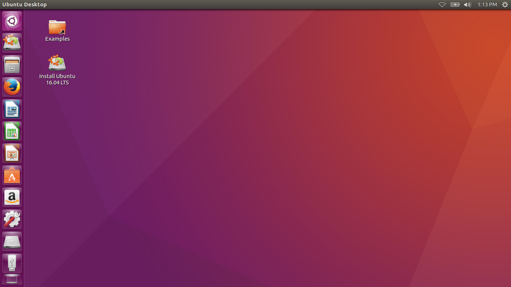

Linux je ena izmed brezplačnih različic operacijskega sistema Unix s prosto dostopno izvorno kodo, zaščiteno s Splošnim dovoljenjem GNU (GNU General Public License - GPL).
Kljub monolitični zgradbi jedra je dinamičnost omogočena z nalaganjem oz. odstranjevanjem posameznih modulov.
Podpira večprocesorski način, številne datotečne sisteme, možnost izbire razvrščevanj, razširitve pomnilniške enote do 4 GB ali več.
Leta 1991 je 21-letni študent iz Helsinkov začel pisati operacijski sistem kot hobij, ki ga je čez čas objavil na internetu, ki so ga po njemu poimenovali Linux.
Takrat je sistem dobil privržence po celem svetu in številni strokovnjaki so mlademu znanstveniku pomagali in sistem izboljšali.
Različica 1.0.0 je izšla leta 1994, pomemben mejnik pa predstavlja leto 1996, ko naj bi z različico 2.0.0, Linux postal primeren tudi za običajne uporabnike, ne le za poznavalce.
Takrat so tudi zaščitili blagovno znamko, sedaj pa je aktualna še različica 3.0.0. Linux je neke vrste brezplačni operacijski sistem, saj lahko vsak uporabnik dobi izvorno kodo OS in jo tudi spreminja (z upoštevanjem licence).
Zato so se pojavile tudi številne distribucije tega operacijskega sistema npr. Ubuntu, Red Hat, Linux Mint, Debian, Kali Linux.

Ubuntu
Debian
Avtor: Rprpr
Poleg varnosti in zanesljivosti je odločilen razlog postala zmogljivost: pri delu in mrežnih oziroma modemskih povezavah v splet. Sistemski administratorji Linux še posebej cenijo zaradi enostavnosti administriranja sistema in manjše možnosti povzročitve nepopravljive škode. Uporaba vmesnika se ne spreminja bistveno, z izjemo lepotnih popravkov. To pomeni, da lahko uporabnik prvih distribucij Linuxa brez večjih težav preide na novejšo. Linux za delovanje vseh perifernih enot (zvočna kartica, video kartica, modem itd.) sploh ne potrebuje grafičnega vmesnika, temveč mu zadošča tudi konzolni. Po drugi strani pa drži, da je do uporabnika bolj neodpustljiv kot MS Windows in ne uživa podpore proizvajalcev programske opreme v tolikšni meri, prav zaradi tega pa na njem ne delujejo nekatere profesionalne aplikacije. Toda veliko aplikacij je možno uspešno nadomestiti z odprtokodnimi alternativami za Linux. Naprimer GIMP, ki je nadomestek za Adobe Photoshop, ali pa LibreOffice, ki je nadomestek za Microsoft Office. Nekatere programe, ki so bili ustvarjeni za MS Windows je mogoče zagnati s pomočjo orodja Wine.